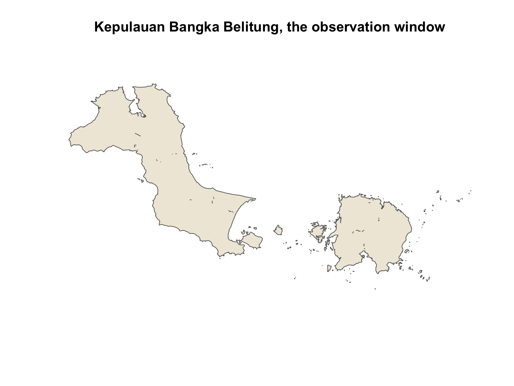
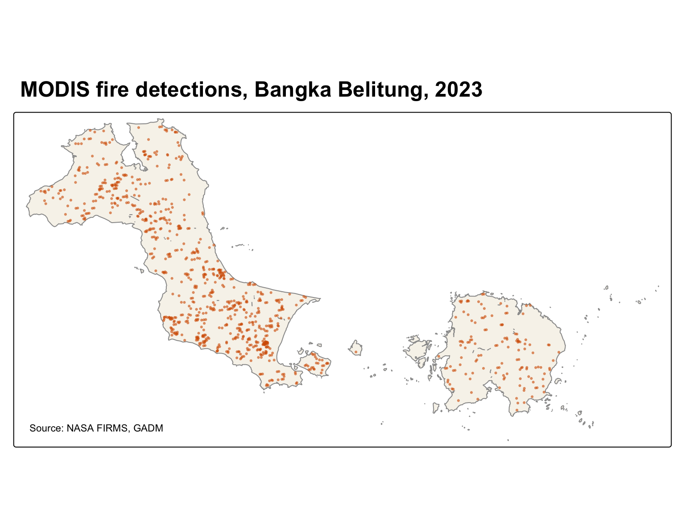
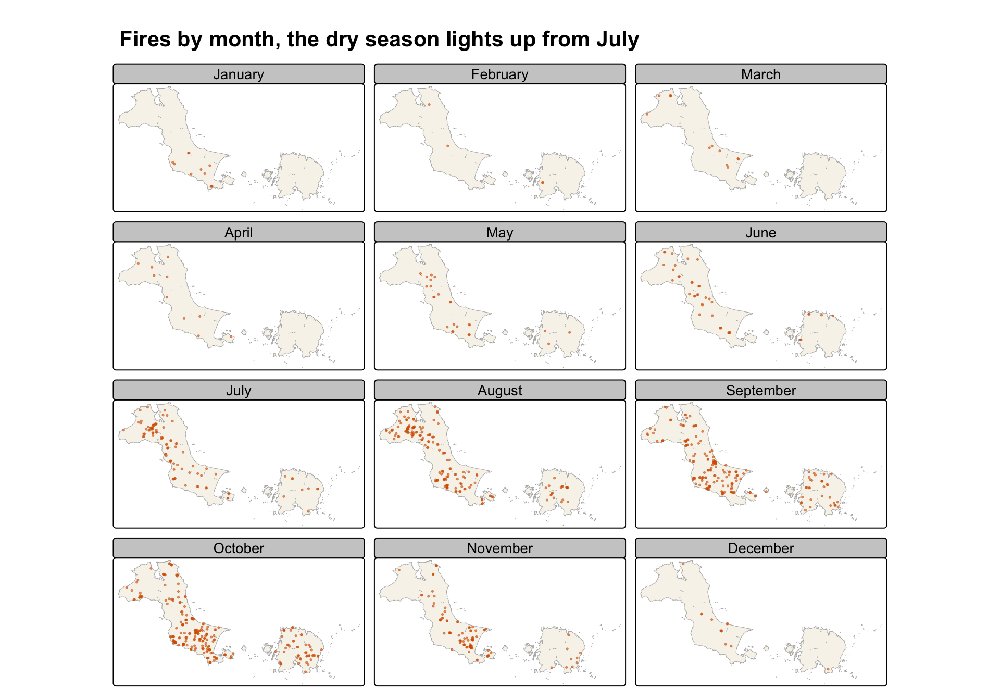
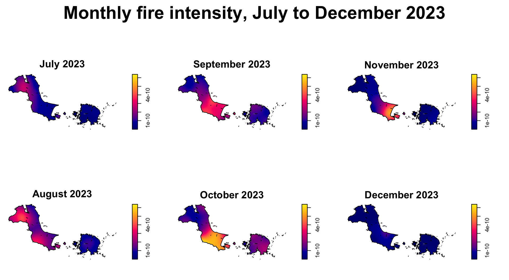
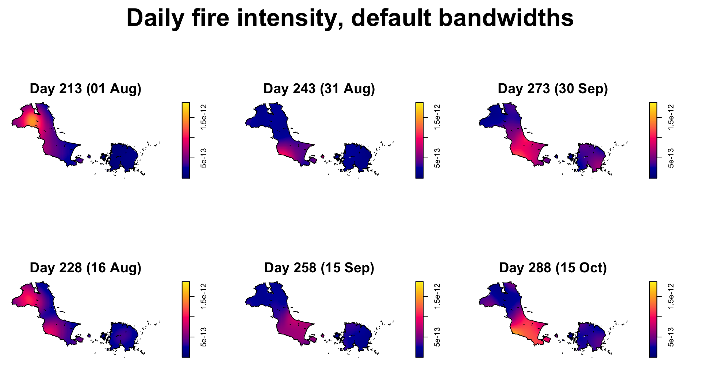
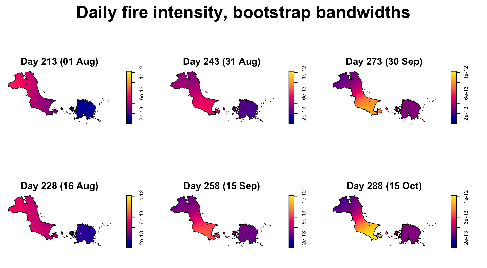
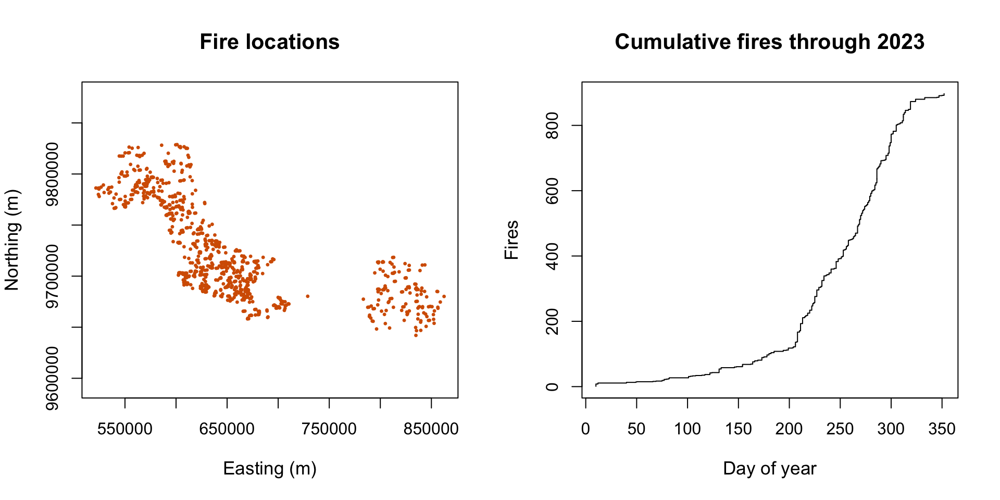
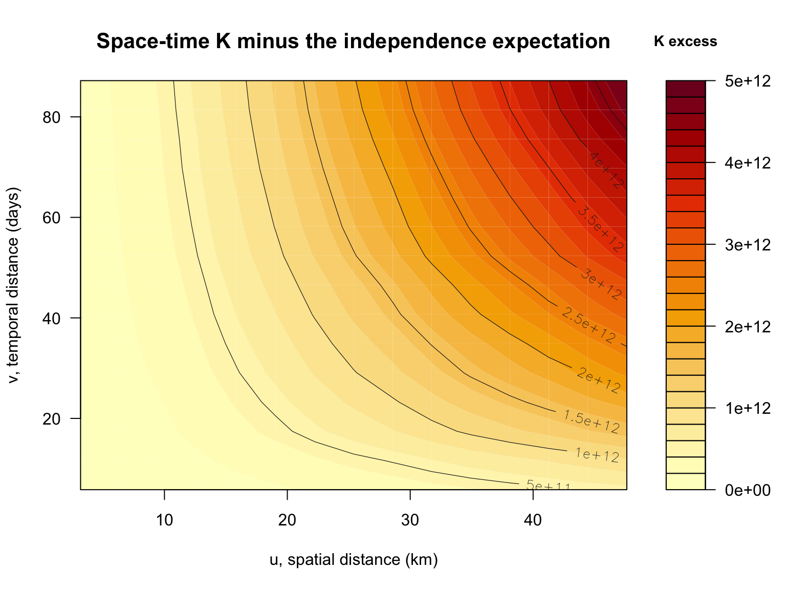
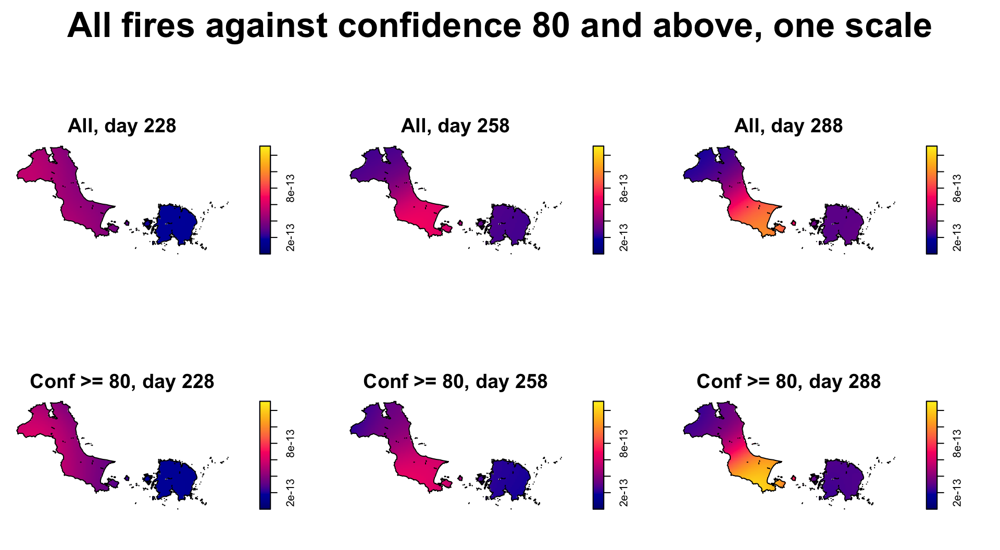
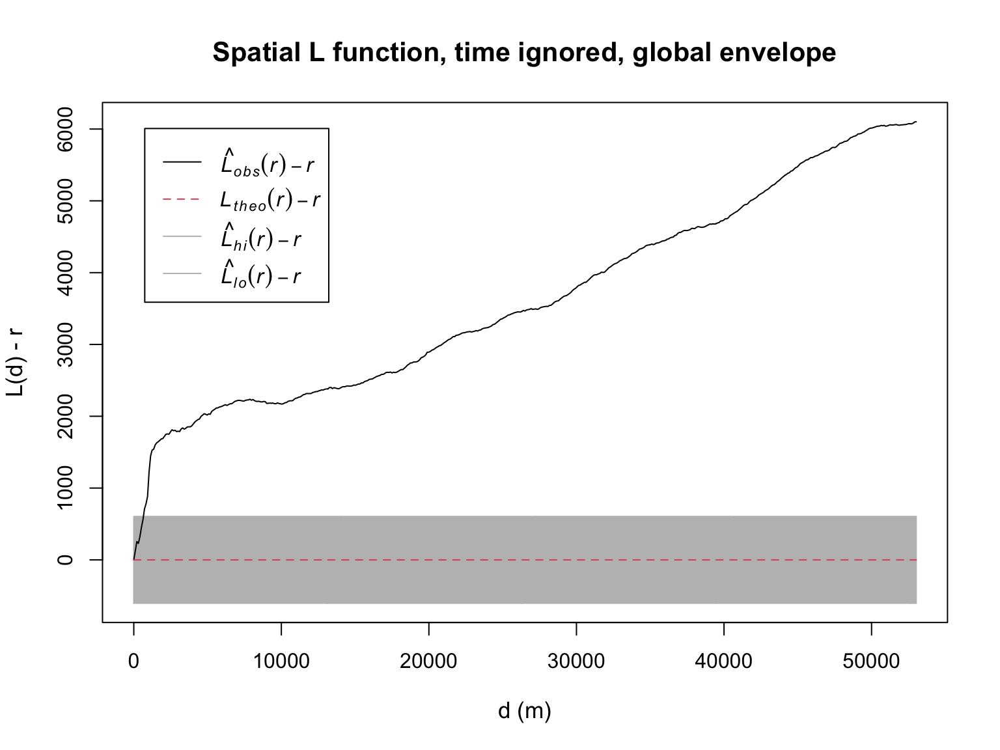

pacman::p_load(sf, spatstat, sparr, stpp, tmap, tidyverse)Hands-on Exercise 3
Spatio-Temporal Point Patterns Analysis
Two datasets, both global, both filtered to one province NASA FIRMS MODIS 2023, GADM 4.1 level 2 sf spatstat sparr stpp tmap tidyverse
1 Overview
Exercises 1 and 2 treated every point as if it happened at the same instant. This one adds time. A fire on 3 August and a fire on 4 August a kilometre apart are a different pattern from the same two fires six months apart, and the methods here can tell them apart.
The two questions the chapter asks are simple. Are the fires in Kepulauan Bangka Belitung independent in space and time, and if not, where and when do they cluster.
2 Loading the Packages
Six packages, two of them new. sf reads and transforms the boundary and the fire points. spatstat supplies the ppp and owin objects and the L function envelope. sparr computes the spatio-temporal kernel density and picks its bandwidths. stpp computes the spatio-temporal K function. tmap draws the point maps. tidyverse does the reading, filtering and counting.
WarningIssue I hit
sparr refused to load on my Mac. It pulls in a package called rpanel that wants X11, which Apple stopped shipping years ago.
The fix is XQuartz, then logging out and back in so the display variable gets set. After that it loads with a warning about display :0 that can be ignored. None of the X11 machinery is used for anything in this exercise. It is only there so rpanel can draw sliders I will never open.
3 Preparing the Data
3.1 Importing and Preparing Study Area
The book uses a kelurahan shapefile from an Indonesian portal. That download ran at 44 kilobytes a second on the day I tried it, with three hours on the clock for 553 MB. I used GADM level 2 instead, which is regency boundaries for the whole country in 4.6 MB.
st_read() of sf reads the national GADM file. The chain then keeps the province, merges it into one outline, drops the Z dimension and projects it to UTM.
kbb_sf <- st_read("data/rawdata/gadm/gadm41_IDN_2.json") %>%
filter(NAME_1 == "BangkaBelitung") %>%
st_union() %>%
st_zm(drop = TRUE, what = "ZM") %>%
st_transform(crs = 32748)Reading layer `gadm41_IDN_2' from data source
`/Users/czxtom/Documents/Programming/GAA/ISSS626-GAA/Hands-on_Ex/Hands-on_Ex03/data/rawdata/gadm/gadm41_IDN_2.json'
using driver `GeoJSON'
Simple feature collection with 502 features and 13 fields
Geometry type: MULTIPOLYGON
Dimension: XY
Bounding box: xmin: 95.0102 ymin: -11.0075 xmax: 141.0194 ymax: 6.0766
Geodetic CRS: WGS 84
NoteLearning diary
Three things in that chain.
The province name in GADM is BangkaBelitung, no space. I found that by printing the unique values rather than guessing, which saved a silent empty filter.
st_union() merges the seven level-2 units (six regencies and the city of Pangkal Pinang) into one outline. Since the rest of the exercise only needs the outer boundary, the admin level underneath does not matter. Kelurahan, kecamatan, kabupaten, all merge to the same shape.
And the CRS is 32748, not 3414. That is UTM zone 48 south. Bangka Belitung sits at 106 east and 2 south, which puts it in zone 48, and the S is because it is below the equator. Using Singapore’s SVY21 here would put the whole island somewhere it is not.
as.owin() of spatstat turns the merged outline into an observation window, the object every point pattern below gets clipped to.
kbb_owin <- as.owin(kbb_sf)
class(kbb_owin)[1] "owin"A quick plot() of the window checks that the union and the projection both worked before any points go on it.

par(cex.main = 1.3, cex.sub = 1.1, cex.lab = 1.1)
plot(kbb_owin, main = "Kepulauan Bangka Belitung, the observation window",
col = "#EFE9DB", border = "grey40")3.2 Importing and Preparing Forest Fire Data
FIRMS publishes MODIS detections one file per country per year. The whole-countries bundle I tried first arrived truncated at 43 of 82 MB and Indonesia was in the missing part, so I fetched the Indonesia file directly instead.
read_csv() of readr (part of tidyverse) reads the file, and nrow() counts the rows.
fire_all <- read_csv("data/rawdata/modis/modis_2023_Indonesia.csv")
nrow(fire_all)[1] 52156That is every detection in Indonesia for 2023. Before clipping to the study area, one column the book never mentions. table() counts the rows of each type.
table(fire_all$type)
0 1 2 3
47883 1495 2755 23
CautionWhere I differ from the book
The book keeps every row and calls them forest fires. The type column says otherwise.
Type 0 is a presumed vegetation fire. Type 1 is an active volcano. Type 2 is another static land source, which means gas flares, industrial heat, that kind of thing. Type 3 is offshore. Indonesia has a lot of volcanoes and a lot of flares, and 4,250 of these detections are one or the other (1,495 volcano, 2,755 static source), with another 23 offshore.
A volcano showing up every day at the same spot would look like extreme spatio-temporal clustering. It is, but not of fires. I keep type 0 only.
filter() keeps type 0, st_as_sf() turns the longitude and latitude into points, st_transform() projects them to the same UTM zone as the boundary, and st_filter() of sf keeps only the points inside Bangka Belitung.
fire_sf <- fire_all %>%
filter(type == 0) %>%
st_as_sf(coords = c("longitude", "latitude"), crs = 4326) %>%
st_transform(crs = 32748) %>%
st_filter(st_as_sf(kbb_sf))
nrow(fire_sf)[1] 897
NoteLearning diary
The book’s csv was already cut to Bangka Belitung, so it has no clipping step. Mine is all of Indonesia, so st_filter() does the cut. It keeps points that intersect the boundary polygon and drops the rest.
I checked the count against the book’s 741. Mine is different, and it should be. Different boundary source, and the type filter removed one static-source row that the book’s approach would have kept.
as.ppp() only accepts numbers or text as marks, so the date has to become a number. yday() and month() of lubridate (part of tidyverse) give three versions, for three different uses later.
fire_sf <- fire_sf %>%
mutate(acq_date = as.Date(acq_date),
DayofYear = yday(acq_date),
Month_num = month(acq_date),
Month_fac = month(acq_date, label = TRUE, abbr = FALSE))4 Visualising the Fire Points
4.1 Overall Plot
tm_shape() and tm_dots() of tmap put every 2023 detection on the merged outline.

tm_shape(kbb_sf) +
tm_polygons(fill = "#F7F4EC", col = "grey60") +
tm_shape(fire_sf) +
tm_dots(fill = "#D55E00", fill_alpha = 0.5, size = 0.15) +
tm_title("MODIS fire detections, Bangka Belitung, 2023", size = 1.5, fontface = "bold") +
tm_credits("Source: NASA FIRMS, GADM", position = c("left", "bottom"))4.2 Visualising Geographic Distribution of Forest Fires by Month
Now by month, which is where the time dimension first shows. tm_facets() of tmap splits the same map into one panel per value of Month_fac.

tm_shape(kbb_sf) +
tm_polygons(fill = "#F7F4EC", col = "grey70") +
tm_shape(fire_sf) +
tm_dots(fill = "#D55E00", fill_alpha = 0.6, size = 0.2) +
tm_facets(by = "Month_fac", free.coords = FALSE, drop.units = TRUE) +
tm_title("Fires by month, the dry season lights up from July", size = 1.3, fontface = "bold") +
tm_layout(panel.label.size = 1.2)To put numbers on the panels, st_drop_geometry() strips the points back to a table and count() tallies the detections per month.
fire_sf %>%
st_drop_geometry() %>%
count(Month_fac, name = "fires")# A tibble: 12 × 2
Month_fac fires
<ord> <int>
1 January 11
2 February 4
3 March 12
4 April 10
5 May 24
6 June 40
7 July 92
8 August 167
9 September 183
10 October 239
11 November 103
12 December 12The first half of the year is nearly empty, 101 of the 897 detections, and August to October carry most of the fires, 589 of them. That is the dry season, and it is the first hint that time matters at least as much as location here.
5 Computing STKDE by Month
Exercise 2’s KDE gave one density surface for the whole year. Here there is one surface for every point in time, so the estimate at any location depends on how many fires happened nearby and recently.
5.1 Creating ppp and Including Owin Object
as.ppp() of spatstat turns the points into a point pattern with Month_num as the mark, and indexing it by kbb_owin clips it to the observation window.
fire_month_ppp <- fire_sf %>%
select(Month_num) %>%
as.ppp()
fire_month_owin <- fire_month_ppp[kbb_owin]
summary(fire_month_owin)Marked planar point pattern: 897 points
Average intensity 5.35172e-08 points per square unit
Coordinates are given to 10 decimal places
marks are numeric, of type 'double'
Summary:
Min. 1st Qu. Median Mean 3rd Qu. Max.
1.000 8.000 9.000 8.639 10.000 12.000
Window: polygonal boundary
308 separate polygons (38 holes)
vertices area relative.area
polygon 1 815 1.16029e+10 6.92e-01
polygon 2 3 3.24609e+04 1.94e-06
polygon 3 4 5.42232e+04 3.24e-06
polygon 4 4 7.99416e+03 4.77e-07
polygon 5 4 6.30175e+04 3.76e-06
polygon 6 5 3.82047e+05 2.28e-05
polygon 7 4 2.39770e+04 1.43e-06
polygon 8 5 2.22126e+05 1.33e-05
polygon 9 (hole) 3 -3.67129e+04 -2.19e-06
polygon 10 (hole) 3 -3.42876e+04 -2.05e-06
polygon 11 7 1.20124e+06 7.17e-05
polygon 12 (hole) 3 -4.25631e+03 -2.54e-07
polygon 13 (hole) 4 -4.66781e+04 -2.78e-06
polygon 14 (hole) 3 -1.68389e+04 -1.00e-06
polygon 15 (hole) 3 -7.27168e+02 -4.34e-08
polygon 16 (hole) 3 -2.79621e+04 -1.67e-06
polygon 17 (hole) 3 -6.60375e+02 -3.94e-08
polygon 18 (hole) 3 -2.52842e+03 -1.51e-07
polygon 19 (hole) 3 -1.38314e+03 -8.25e-08
polygon 20 11 1.20884e+06 7.21e-05
polygon 21 (hole) 3 -3.27585e+04 -1.95e-06
polygon 22 5 1.74926e+05 1.04e-05
polygon 23 (hole) 3 -3.35348e+02 -2.00e-08
polygon 24 (hole) 3 -4.08226e+03 -2.44e-07
polygon 25 (hole) 3 -1.45480e+04 -8.68e-07
polygon 26 (hole) 3 -3.08962e+02 -1.84e-08
polygon 27 6 1.40188e+05 8.36e-06
polygon 28 5 8.49109e+04 5.07e-06
polygon 29 4 2.39803e+03 1.43e-07
polygon 30 4 8.73093e+03 5.21e-07
polygon 31 5 1.29977e+05 7.75e-06
polygon 32 4 8.60809e+03 5.14e-07
polygon 33 5 2.59087e+05 1.55e-05
polygon 34 4 1.58516e+05 9.46e-06
polygon 35 4 1.29123e+03 7.70e-08
polygon 36 5 1.10066e+05 6.57e-06
polygon 37 4 2.21238e+03 1.32e-07
polygon 38 8 1.54252e+05 9.20e-06
polygon 39 4 8.48082e+03 5.06e-07
polygon 40 4 2.33528e+03 1.39e-07
polygon 41 15 3.11417e+06 1.86e-04
polygon 42 11 2.31185e+06 1.38e-04
polygon 43 4 6.36935e+04 3.80e-06
polygon 44 4 3.76206e+04 2.24e-06
polygon 45 4 6.32582e+04 3.77e-06
polygon 46 4 1.25637e+04 7.50e-07
polygon 47 662 4.61716e+09 2.75e-01
polygon 48 4 6.34172e+03 3.78e-07
polygon 49 5 1.20592e+05 7.19e-06
polygon 50 4 1.73619e+04 1.04e-06
polygon 51 4 2.77155e+04 1.65e-06
polygon 52 5 6.42757e+04 3.83e-06
polygon 53 4 8.43501e+03 5.03e-07
polygon 54 4 7.51117e+03 4.48e-07
polygon 55 9 1.46680e+06 8.75e-05
polygon 56 5 3.36169e+04 2.01e-06
polygon 57 4 6.05506e+04 3.61e-06
polygon 58 4 1.16395e+04 6.94e-07
polygon 59 4 4.13323e+04 2.47e-06
polygon 60 4 1.07759e+04 6.43e-07
polygon 61 4 3.81773e+03 2.28e-07
polygon 62 4 1.67345e+05 9.98e-06
polygon 63 4 3.08386e+04 1.84e-06
polygon 64 4 5.78820e+03 3.45e-07
polygon 65 4 5.41829e+03 3.23e-07
polygon 66 4 2.21673e+03 1.32e-07
polygon 67 4 1.63779e+04 9.77e-07
polygon 68 4 7.63485e+03 4.56e-07
polygon 69 4 8.68147e+03 5.18e-07
polygon 70 4 7.26509e+03 4.33e-07
polygon 71 4 1.02214e+04 6.10e-07
polygon 72 4 1.98251e+04 1.18e-06
polygon 73 4 8.61964e+03 5.14e-07
polygon 74 4 8.19962e+04 4.89e-06
polygon 75 4 3.32475e+03 1.98e-07
polygon 76 4 2.77069e+03 1.65e-07
polygon 77 4 3.94077e+03 2.35e-07
polygon 78 4 6.38963e+04 3.81e-06
polygon 79 4 2.58576e+03 1.54e-07
polygon 80 (hole) 3 -4.14788e+03 -2.47e-07
polygon 81 4 7.20362e+03 4.30e-07
polygon 82 4 6.09823e+03 3.64e-07
polygon 83 4 4.80847e+04 2.87e-06
polygon 84 5 2.12649e+05 1.27e-05
polygon 85 (hole) 4 -1.54678e+04 -9.23e-07
polygon 86 8 1.12373e+06 6.70e-05
polygon 87 4 2.52418e+03 1.51e-07
polygon 88 4 5.29463e+03 3.16e-07
polygon 89 4 7.57252e+03 4.52e-07
polygon 90 6 1.64502e+05 9.81e-06
polygon 91 4 5.95010e+04 3.55e-06
polygon 92 4 1.21987e+04 7.28e-07
polygon 93 4 7.38787e+02 4.41e-08
polygon 94 4 2.73952e+04 1.63e-06
polygon 95 4 4.00173e+03 2.39e-07
polygon 96 4 2.89358e+03 1.73e-07
polygon 97 4 4.37124e+03 2.61e-07
polygon 98 (hole) 3 -1.28102e+04 -7.64e-07
polygon 99 10 2.18651e+06 1.30e-04
polygon 100 4 4.09041e+04 2.44e-06
polygon 101 4 4.18641e+03 2.50e-07
polygon 102 4 1.00965e+04 6.02e-07
polygon 103 (hole) 3 -1.25852e+03 -7.51e-08
polygon 104 4 9.48097e+03 5.66e-07
polygon 105 4 6.97619e+04 4.16e-06
polygon 106 4 1.41599e+03 8.45e-08
polygon 107 (hole) 3 -5.96762e+04 -3.56e-06
polygon 108 (hole) 3 -5.49663e+04 -3.28e-06
polygon 109 4 3.36485e+04 2.01e-06
polygon 110 6 5.27406e+05 3.15e-05
polygon 111 4 4.88529e+04 2.91e-06
polygon 112 5 7.28786e+04 4.35e-06
polygon 113 12 1.03353e+06 6.17e-05
polygon 114 7 2.21577e+05 1.32e-05
polygon 115 4 3.47765e+04 2.07e-06
polygon 116 (hole) 4 -2.29935e+04 -1.37e-06
polygon 117 6 8.13353e+05 4.85e-05
polygon 118 (hole) 3 -3.04392e+04 -1.82e-06
polygon 119 4 4.24745e+03 2.53e-07
polygon 120 4 1.01108e+05 6.03e-06
polygon 121 4 9.41820e+03 5.62e-07
polygon 122 4 1.09569e+04 6.54e-07
polygon 123 4 1.23116e+02 7.35e-09
polygon 124 (hole) 3 -5.35156e+03 -3.19e-07
polygon 125 15 3.89941e+05 2.33e-05
polygon 126 (hole) 3 -1.72223e+04 -1.03e-06
polygon 127 4 2.55805e+04 1.53e-06
polygon 128 8 1.04148e+05 6.21e-06
polygon 129 5 7.50943e+03 4.48e-07
polygon 130 7 4.55629e+05 2.72e-05
polygon 131 (hole) 3 -9.54582e+03 -5.70e-07
polygon 132 4 1.55105e+04 9.25e-07
polygon 133 4 1.76039e+04 1.05e-06
polygon 134 4 5.35495e+03 3.19e-07
polygon 135 4 4.43060e+03 2.64e-07
polygon 136 5 4.06734e+05 2.43e-05
polygon 137 45 1.76360e+07 1.05e-03
polygon 138 4 7.01667e+03 4.19e-07
polygon 139 4 4.25343e+03 2.54e-07
polygon 140 5 2.11664e+05 1.26e-05
polygon 141 4 1.84588e+03 1.10e-07
polygon 142 5 5.00832e+03 2.99e-07
polygon 143 5 7.62514e+04 4.55e-06
polygon 144 4 3.63039e+03 2.17e-07
polygon 145 50 4.89627e+07 2.92e-03
polygon 146 111 1.19754e+08 7.14e-03
polygon 147 16 3.68174e+06 2.20e-04
polygon 148 4 8.24760e+04 4.92e-06
polygon 149 5 5.81024e+04 3.47e-06
polygon 150 4 4.08073e+04 2.43e-06
polygon 151 4 2.89845e+04 1.73e-06
polygon 152 8 1.43483e+06 8.56e-05
polygon 153 4 1.20814e+04 7.21e-07
polygon 154 13 3.67004e+06 2.19e-04
polygon 155 14 3.63429e+06 2.17e-04
polygon 156 4 2.24611e+04 1.34e-06
polygon 157 4 1.55087e+04 9.25e-07
polygon 158 4 2.11021e+05 1.26e-05
polygon 159 4 5.23124e+03 3.12e-07
polygon 160 4 5.60046e+03 3.34e-07
polygon 161 4 1.37815e+04 8.22e-07
polygon 162 19 7.13461e+06 4.26e-04
polygon 163 (hole) 3 -5.67120e+03 -3.38e-07
polygon 164 (hole) 4 -1.00459e+05 -5.99e-06
polygon 165 (hole) 3 -5.37996e+03 -3.21e-07
polygon 166 (hole) 3 -1.82674e+04 -1.09e-06
polygon 167 5 1.38061e+05 8.24e-06
polygon 168 (hole) 3 -3.74646e+04 -2.24e-06
polygon 169 (hole) 3 -3.01697e+04 -1.80e-06
polygon 170 (hole) 3 -5.28210e+04 -3.15e-06
polygon 171 9 1.97808e+06 1.18e-04
polygon 172 4 1.58607e+04 9.46e-07
polygon 173 74 2.12604e+08 1.27e-02
polygon 174 5 1.62979e+05 9.72e-06
polygon 175 4 4.30659e+03 2.57e-07
polygon 176 9 1.53324e+06 9.15e-05
polygon 177 4 9.59752e+03 5.73e-07
polygon 178 4 4.79930e+04 2.86e-06
polygon 179 52 2.23528e+07 1.33e-03
polygon 180 16 2.45920e+06 1.47e-04
polygon 181 4 8.13532e+03 4.85e-07
polygon 182 4 3.38408e+04 2.02e-06
polygon 183 4 2.41837e+04 1.44e-06
polygon 184 4 5.16830e+03 3.08e-07
polygon 185 5 1.61814e+04 9.65e-07
polygon 186 4 6.27571e+03 3.74e-07
polygon 187 5 9.84176e+05 5.87e-05
polygon 188 6 4.20332e+05 2.51e-05
polygon 189 4 2.80854e+05 1.68e-05
polygon 190 10 1.12068e+06 6.69e-05
polygon 191 6 6.73527e+05 4.02e-05
polygon 192 4 4.54882e+04 2.71e-06
polygon 193 12 5.21902e+06 3.11e-04
polygon 194 18 1.73578e+06 1.04e-04
polygon 195 4 3.38083e+04 2.02e-06
polygon 196 4 1.26951e+04 7.57e-07
polygon 197 4 3.62554e+03 2.16e-07
polygon 198 12 3.09025e+06 1.84e-04
polygon 199 4 1.47390e+05 8.79e-06
polygon 200 5 4.05411e+05 2.42e-05
polygon 201 4 4.33229e+04 2.58e-06
polygon 202 5 1.11261e+05 6.64e-06
polygon 203 4 2.74282e+04 1.64e-06
polygon 204 10 1.68501e+06 1.01e-04
polygon 205 (hole) 3 -6.11140e+04 -3.65e-06
polygon 206 4 1.53224e+05 9.14e-06
polygon 207 4 1.93211e+04 1.15e-06
polygon 208 9 1.84908e+06 1.10e-04
polygon 209 (hole) 3 -1.33518e+04 -7.97e-07
polygon 210 4 4.12824e+04 2.46e-06
polygon 211 9 1.09964e+06 6.56e-05
polygon 212 7 8.26344e+05 4.93e-05
polygon 213 13 3.94567e+06 2.35e-04
polygon 214 9 7.82390e+05 4.67e-05
polygon 215 4 4.42404e+04 2.64e-06
polygon 216 (hole) 3 -1.04577e+04 -6.24e-07
polygon 217 4 4.24176e+03 2.53e-07
polygon 218 6 6.77188e+05 4.04e-05
polygon 219 5 3.74156e+05 2.23e-05
polygon 220 4 5.16401e+03 3.08e-07
polygon 221 4 3.24186e+04 1.93e-06
polygon 222 18 7.37432e+06 4.40e-04
polygon 223 5 2.31557e+05 1.38e-05
polygon 224 4 8.61269e+03 5.14e-07
polygon 225 4 9.72139e+03 5.80e-07
polygon 226 4 4.63359e+04 2.76e-06
polygon 227 5 7.51106e+04 4.48e-06
polygon 228 4 5.80096e+04 3.46e-06
polygon 229 4 1.32885e+04 7.93e-07
polygon 230 4 2.83028e+03 1.69e-07
polygon 231 4 2.57186e+04 1.53e-06
polygon 232 5 4.18863e+05 2.50e-05
polygon 233 3 1.72258e+03 1.03e-07
polygon 234 4 2.58773e+03 1.54e-07
polygon 235 4 1.53801e+03 9.18e-08
polygon 236 4 1.20582e+04 7.19e-07
polygon 237 4 1.63886e+04 9.78e-07
polygon 238 4 2.67587e+04 1.60e-06
polygon 239 4 1.59792e+03 9.53e-08
polygon 240 4 2.82709e+03 1.69e-07
polygon 241 4 3.99475e+03 2.38e-07
polygon 242 4 1.47504e+03 8.80e-08
polygon 243 17 3.84724e+06 2.30e-04
polygon 244 4 2.82673e+03 1.69e-07
polygon 245 4 1.01394e+04 6.05e-07
polygon 246 (hole) 7 -6.43668e+04 -3.84e-06
polygon 247 (hole) 3 -9.40962e+01 -5.61e-09
polygon 248 4 1.10610e+04 6.60e-07
polygon 249 4 1.74517e+04 1.04e-06
polygon 250 4 2.82669e+03 1.69e-07
polygon 251 7 5.06540e+05 3.02e-05
polygon 252 4 6.29591e+04 3.76e-06
polygon 253 4 4.54585e+04 2.71e-06
polygon 254 6 9.55597e+05 5.70e-05
polygon 255 7 7.76558e+05 4.63e-05
polygon 256 5 1.71781e+05 1.02e-05
polygon 257 5 2.11515e+05 1.26e-05
polygon 258 7 2.87493e+05 1.72e-05
polygon 259 5 3.95557e+05 2.36e-05
polygon 260 27 1.62392e+07 9.69e-04
polygon 261 4 4.43585e+03 2.65e-07
polygon 262 4 6.27477e+03 3.74e-07
polygon 263 10 1.30987e+06 7.82e-05
polygon 264 9 2.25682e+06 1.35e-04
polygon 265 4 1.45948e+04 8.71e-07
polygon 266 4 1.21931e+04 7.27e-07
polygon 267 9 1.17483e+06 7.01e-05
polygon 268 4 2.20546e+04 1.32e-06
polygon 269 5 3.03395e+04 1.81e-06
polygon 270 4 9.35222e+03 5.58e-07
polygon 271 4 1.03499e+05 6.18e-06
polygon 272 6 2.34707e+04 1.40e-06
polygon 273 4 7.75326e+03 4.63e-07
polygon 274 4 1.23210e+03 7.35e-08
polygon 275 4 2.71061e+03 1.62e-07
polygon 276 4 2.80917e+04 1.68e-06
polygon 277 4 1.97108e+03 1.18e-07
polygon 278 4 4.43561e+03 2.65e-07
polygon 279 4 5.11117e+03 3.05e-07
polygon 280 6 4.86779e+05 2.90e-05
polygon 281 5 8.12261e+04 4.85e-06
polygon 282 4 2.50739e+04 1.50e-06
polygon 283 4 2.71022e+03 1.62e-07
polygon 284 6 3.33963e+05 1.99e-05
polygon 285 14 3.34010e+06 1.99e-04
polygon 286 4 4.31165e+03 2.57e-07
polygon 287 4 2.84259e+04 1.70e-06
polygon 288 4 2.50478e+04 1.49e-06
polygon 289 5 1.72690e+05 1.03e-05
polygon 290 4 1.37933e+04 8.23e-07
polygon 291 4 3.08058e+03 1.84e-07
polygon 292 5 1.34807e+05 8.04e-06
polygon 293 5 4.43080e+04 2.64e-06
polygon 294 13 2.22861e+06 1.33e-04
polygon 295 4 4.19032e+03 2.50e-07
polygon 296 11 1.04351e+06 6.23e-05
polygon 297 4 1.49419e+04 8.91e-07
polygon 298 4 7.14815e+03 4.26e-07
polygon 299 4 8.08482e+04 4.82e-06
polygon 300 6 1.92382e+05 1.15e-05
polygon 301 4 2.08873e+05 1.25e-05
polygon 302 4 3.08068e+04 1.84e-06
polygon 303 5 6.62422e+04 3.95e-06
polygon 304 7 1.05373e+06 6.29e-05
polygon 305 4 2.57200e+04 1.53e-06
polygon 306 4 1.22325e+05 7.30e-06
polygon 307 6 2.33212e+05 1.39e-05
polygon 308 4 1.44038e+05 8.59e-06
enclosing rectangle: [512010.2, 928094.9] x [9621873, 9833973] units
(416100 x 212100 units)
Window area = 1.6761e+10 square units
Fraction of frame area: 0.19duplicated() flags points that share both location and mark, which kernel estimators handle badly.
any(duplicated(fire_month_owin))[1] FALSE5.2 Computing Spatio-Temporal KDE
spattemp.density() of sparr estimates the density over space and time with its default bandwidths, and summary() prints them.
st_kde <- spattemp.density(fire_month_owin)
summary(st_kde)Spatiotemporal Kernel Density Estimate
Bandwidths
h = 19139.22 (spatial)
lambda = 0.0265 (temporal)
No. of observations
897
Spatial bound
Type: polygonal
2D enclosure: [512010.2, 928094.9] x [9621873, 9833973]
Temporal bound
[1, 12]
Evaluation
128 x 128 x 12 trivariate lattice
Density range: [1.404024e-39, 6.38687e-10]
NoteLearning diary
Two bandwidths come out of this, not one. h is the spatial one in metres, around 19 km. lambda is the temporal one in months, and it comes out at 0.027 of a month, which is less than a day.
A day of smoothing on data recorded in whole months is odd. It means month 8 barely borrows anything from months 7 or 9.
I did not understand why until the day-of-year section below, where the same function picks a very different lambda. The default rule reacts to how the time values are spaced, and whole months are very coarse.
5.3 Plotting the Spatio-Temporal KDE Object
sparr’s plot() method draws one time slice per call. It also adds axis(1), axis(2) and an L-shaped box after every panel, so my first version framed each small map in projected metres like 9.7e+06, which mean nothing to a reader and got cut off at the panel edges. The small function below does what that method does, one slice drawn with spatstat’s plot() for pixel images plus the window outline, just without the axes. It takes the colour range as an argument so that panels can share one scale.
plot_slice <- function(kde, t, zlim, main) {
tt <- as.numeric(names(kde$z))
slice <- kde$z[[which.min(abs(tt - t))]]
plot(slice, main = main, zlim = zlim, box = FALSE,
ribargs = list(box = TRUE))
plot(as.polygonal(Window(kde$pp)), add = TRUE)
}
NoteLearning diary
The obvious fix, par(xaxt = "n", yaxt = "n") before the loop, would also have blanked the numbers on the colour ribbon. spatstat draws those with axis() on side 4, and a global yaxt = "n" switches that off too. Reading the source of plot.stden() showed it is a short loop around a plot.im() call, so copying the two lines I needed was simpler than fighting the axes.
The panels show July to December. The colour key is the estimated joint density, the share of the year’s detections per square metre per month, which is why the numbers are so small (the peak is about 6.4e-10). zlim_month is the range over all twelve monthly surfaces, so the six panels share one colour scale.

zlim_month <- range(sapply(st_kde$z, range))
tims <- c(7, 8, 9, 10, 11, 12)
par(mfcol = c(2, 3), mar = c(0.5, 0.5, 2, 4), oma = c(0, 0, 3, 0), cex.main = 1.8)
for (i in tims) {
plot_slice(st_kde, i, zlim = zlim_month,
main = paste(month.name[i], "2023"))
}
mtext("Monthly fire intensity, July to December 2023", outer = TRUE, cex = 2.1, font = 2)
par(mfcol = c(1, 1), oma = c(0, 0, 0, 0))The shared zlim does the job of sparr’s fix.range = TRUE, which takes the same range over every time slice. Without it each month gets its own scale and a quiet December looks as busy as a peak September.
6 Computing STKDE by Day of Year
6.1 Computing Spatio-Temporal KDE
Same steps as the monthly version, with DayofYear as the mark this time.
fire_yday_owin <- fire_sf %>%
select(DayofYear) %>%
as.ppp() %>%
.[kbb_owin]
summary(fire_yday_owin)Marked planar point pattern: 897 points
Average intensity 5.35172e-08 points per square unit
Coordinates are given to 10 decimal places
marks are numeric, of type 'double'
Summary:
Min. 1st Qu. Median Mean 3rd Qu. Max.
10.0 218.0 259.0 247.6 288.0 352.0
Window: polygonal boundary
308 separate polygons (38 holes)
vertices area relative.area
polygon 1 815 1.16029e+10 6.92e-01
polygon 2 3 3.24609e+04 1.94e-06
polygon 3 4 5.42232e+04 3.24e-06
polygon 4 4 7.99416e+03 4.77e-07
polygon 5 4 6.30175e+04 3.76e-06
polygon 6 5 3.82047e+05 2.28e-05
polygon 7 4 2.39770e+04 1.43e-06
polygon 8 5 2.22126e+05 1.33e-05
polygon 9 (hole) 3 -3.67129e+04 -2.19e-06
polygon 10 (hole) 3 -3.42876e+04 -2.05e-06
polygon 11 7 1.20124e+06 7.17e-05
polygon 12 (hole) 3 -4.25631e+03 -2.54e-07
polygon 13 (hole) 4 -4.66781e+04 -2.78e-06
polygon 14 (hole) 3 -1.68389e+04 -1.00e-06
polygon 15 (hole) 3 -7.27168e+02 -4.34e-08
polygon 16 (hole) 3 -2.79621e+04 -1.67e-06
polygon 17 (hole) 3 -6.60375e+02 -3.94e-08
polygon 18 (hole) 3 -2.52842e+03 -1.51e-07
polygon 19 (hole) 3 -1.38314e+03 -8.25e-08
polygon 20 11 1.20884e+06 7.21e-05
polygon 21 (hole) 3 -3.27585e+04 -1.95e-06
polygon 22 5 1.74926e+05 1.04e-05
polygon 23 (hole) 3 -3.35348e+02 -2.00e-08
polygon 24 (hole) 3 -4.08226e+03 -2.44e-07
polygon 25 (hole) 3 -1.45480e+04 -8.68e-07
polygon 26 (hole) 3 -3.08962e+02 -1.84e-08
polygon 27 6 1.40188e+05 8.36e-06
polygon 28 5 8.49109e+04 5.07e-06
polygon 29 4 2.39803e+03 1.43e-07
polygon 30 4 8.73093e+03 5.21e-07
polygon 31 5 1.29977e+05 7.75e-06
polygon 32 4 8.60809e+03 5.14e-07
polygon 33 5 2.59087e+05 1.55e-05
polygon 34 4 1.58516e+05 9.46e-06
polygon 35 4 1.29123e+03 7.70e-08
polygon 36 5 1.10066e+05 6.57e-06
polygon 37 4 2.21238e+03 1.32e-07
polygon 38 8 1.54252e+05 9.20e-06
polygon 39 4 8.48082e+03 5.06e-07
polygon 40 4 2.33528e+03 1.39e-07
polygon 41 15 3.11417e+06 1.86e-04
polygon 42 11 2.31185e+06 1.38e-04
polygon 43 4 6.36935e+04 3.80e-06
polygon 44 4 3.76206e+04 2.24e-06
polygon 45 4 6.32582e+04 3.77e-06
polygon 46 4 1.25637e+04 7.50e-07
polygon 47 662 4.61716e+09 2.75e-01
polygon 48 4 6.34172e+03 3.78e-07
polygon 49 5 1.20592e+05 7.19e-06
polygon 50 4 1.73619e+04 1.04e-06
polygon 51 4 2.77155e+04 1.65e-06
polygon 52 5 6.42757e+04 3.83e-06
polygon 53 4 8.43501e+03 5.03e-07
polygon 54 4 7.51117e+03 4.48e-07
polygon 55 9 1.46680e+06 8.75e-05
polygon 56 5 3.36169e+04 2.01e-06
polygon 57 4 6.05506e+04 3.61e-06
polygon 58 4 1.16395e+04 6.94e-07
polygon 59 4 4.13323e+04 2.47e-06
polygon 60 4 1.07759e+04 6.43e-07
polygon 61 4 3.81773e+03 2.28e-07
polygon 62 4 1.67345e+05 9.98e-06
polygon 63 4 3.08386e+04 1.84e-06
polygon 64 4 5.78820e+03 3.45e-07
polygon 65 4 5.41829e+03 3.23e-07
polygon 66 4 2.21673e+03 1.32e-07
polygon 67 4 1.63779e+04 9.77e-07
polygon 68 4 7.63485e+03 4.56e-07
polygon 69 4 8.68147e+03 5.18e-07
polygon 70 4 7.26509e+03 4.33e-07
polygon 71 4 1.02214e+04 6.10e-07
polygon 72 4 1.98251e+04 1.18e-06
polygon 73 4 8.61964e+03 5.14e-07
polygon 74 4 8.19962e+04 4.89e-06
polygon 75 4 3.32475e+03 1.98e-07
polygon 76 4 2.77069e+03 1.65e-07
polygon 77 4 3.94077e+03 2.35e-07
polygon 78 4 6.38963e+04 3.81e-06
polygon 79 4 2.58576e+03 1.54e-07
polygon 80 (hole) 3 -4.14788e+03 -2.47e-07
polygon 81 4 7.20362e+03 4.30e-07
polygon 82 4 6.09823e+03 3.64e-07
polygon 83 4 4.80847e+04 2.87e-06
polygon 84 5 2.12649e+05 1.27e-05
polygon 85 (hole) 4 -1.54678e+04 -9.23e-07
polygon 86 8 1.12373e+06 6.70e-05
polygon 87 4 2.52418e+03 1.51e-07
polygon 88 4 5.29463e+03 3.16e-07
polygon 89 4 7.57252e+03 4.52e-07
polygon 90 6 1.64502e+05 9.81e-06
polygon 91 4 5.95010e+04 3.55e-06
polygon 92 4 1.21987e+04 7.28e-07
polygon 93 4 7.38787e+02 4.41e-08
polygon 94 4 2.73952e+04 1.63e-06
polygon 95 4 4.00173e+03 2.39e-07
polygon 96 4 2.89358e+03 1.73e-07
polygon 97 4 4.37124e+03 2.61e-07
polygon 98 (hole) 3 -1.28102e+04 -7.64e-07
polygon 99 10 2.18651e+06 1.30e-04
polygon 100 4 4.09041e+04 2.44e-06
polygon 101 4 4.18641e+03 2.50e-07
polygon 102 4 1.00965e+04 6.02e-07
polygon 103 (hole) 3 -1.25852e+03 -7.51e-08
polygon 104 4 9.48097e+03 5.66e-07
polygon 105 4 6.97619e+04 4.16e-06
polygon 106 4 1.41599e+03 8.45e-08
polygon 107 (hole) 3 -5.96762e+04 -3.56e-06
polygon 108 (hole) 3 -5.49663e+04 -3.28e-06
polygon 109 4 3.36485e+04 2.01e-06
polygon 110 6 5.27406e+05 3.15e-05
polygon 111 4 4.88529e+04 2.91e-06
polygon 112 5 7.28786e+04 4.35e-06
polygon 113 12 1.03353e+06 6.17e-05
polygon 114 7 2.21577e+05 1.32e-05
polygon 115 4 3.47765e+04 2.07e-06
polygon 116 (hole) 4 -2.29935e+04 -1.37e-06
polygon 117 6 8.13353e+05 4.85e-05
polygon 118 (hole) 3 -3.04392e+04 -1.82e-06
polygon 119 4 4.24745e+03 2.53e-07
polygon 120 4 1.01108e+05 6.03e-06
polygon 121 4 9.41820e+03 5.62e-07
polygon 122 4 1.09569e+04 6.54e-07
polygon 123 4 1.23116e+02 7.35e-09
polygon 124 (hole) 3 -5.35156e+03 -3.19e-07
polygon 125 15 3.89941e+05 2.33e-05
polygon 126 (hole) 3 -1.72223e+04 -1.03e-06
polygon 127 4 2.55805e+04 1.53e-06
polygon 128 8 1.04148e+05 6.21e-06
polygon 129 5 7.50943e+03 4.48e-07
polygon 130 7 4.55629e+05 2.72e-05
polygon 131 (hole) 3 -9.54582e+03 -5.70e-07
polygon 132 4 1.55105e+04 9.25e-07
polygon 133 4 1.76039e+04 1.05e-06
polygon 134 4 5.35495e+03 3.19e-07
polygon 135 4 4.43060e+03 2.64e-07
polygon 136 5 4.06734e+05 2.43e-05
polygon 137 45 1.76360e+07 1.05e-03
polygon 138 4 7.01667e+03 4.19e-07
polygon 139 4 4.25343e+03 2.54e-07
polygon 140 5 2.11664e+05 1.26e-05
polygon 141 4 1.84588e+03 1.10e-07
polygon 142 5 5.00832e+03 2.99e-07
polygon 143 5 7.62514e+04 4.55e-06
polygon 144 4 3.63039e+03 2.17e-07
polygon 145 50 4.89627e+07 2.92e-03
polygon 146 111 1.19754e+08 7.14e-03
polygon 147 16 3.68174e+06 2.20e-04
polygon 148 4 8.24760e+04 4.92e-06
polygon 149 5 5.81024e+04 3.47e-06
polygon 150 4 4.08073e+04 2.43e-06
polygon 151 4 2.89845e+04 1.73e-06
polygon 152 8 1.43483e+06 8.56e-05
polygon 153 4 1.20814e+04 7.21e-07
polygon 154 13 3.67004e+06 2.19e-04
polygon 155 14 3.63429e+06 2.17e-04
polygon 156 4 2.24611e+04 1.34e-06
polygon 157 4 1.55087e+04 9.25e-07
polygon 158 4 2.11021e+05 1.26e-05
polygon 159 4 5.23124e+03 3.12e-07
polygon 160 4 5.60046e+03 3.34e-07
polygon 161 4 1.37815e+04 8.22e-07
polygon 162 19 7.13461e+06 4.26e-04
polygon 163 (hole) 3 -5.67120e+03 -3.38e-07
polygon 164 (hole) 4 -1.00459e+05 -5.99e-06
polygon 165 (hole) 3 -5.37996e+03 -3.21e-07
polygon 166 (hole) 3 -1.82674e+04 -1.09e-06
polygon 167 5 1.38061e+05 8.24e-06
polygon 168 (hole) 3 -3.74646e+04 -2.24e-06
polygon 169 (hole) 3 -3.01697e+04 -1.80e-06
polygon 170 (hole) 3 -5.28210e+04 -3.15e-06
polygon 171 9 1.97808e+06 1.18e-04
polygon 172 4 1.58607e+04 9.46e-07
polygon 173 74 2.12604e+08 1.27e-02
polygon 174 5 1.62979e+05 9.72e-06
polygon 175 4 4.30659e+03 2.57e-07
polygon 176 9 1.53324e+06 9.15e-05
polygon 177 4 9.59752e+03 5.73e-07
polygon 178 4 4.79930e+04 2.86e-06
polygon 179 52 2.23528e+07 1.33e-03
polygon 180 16 2.45920e+06 1.47e-04
polygon 181 4 8.13532e+03 4.85e-07
polygon 182 4 3.38408e+04 2.02e-06
polygon 183 4 2.41837e+04 1.44e-06
polygon 184 4 5.16830e+03 3.08e-07
polygon 185 5 1.61814e+04 9.65e-07
polygon 186 4 6.27571e+03 3.74e-07
polygon 187 5 9.84176e+05 5.87e-05
polygon 188 6 4.20332e+05 2.51e-05
polygon 189 4 2.80854e+05 1.68e-05
polygon 190 10 1.12068e+06 6.69e-05
polygon 191 6 6.73527e+05 4.02e-05
polygon 192 4 4.54882e+04 2.71e-06
polygon 193 12 5.21902e+06 3.11e-04
polygon 194 18 1.73578e+06 1.04e-04
polygon 195 4 3.38083e+04 2.02e-06
polygon 196 4 1.26951e+04 7.57e-07
polygon 197 4 3.62554e+03 2.16e-07
polygon 198 12 3.09025e+06 1.84e-04
polygon 199 4 1.47390e+05 8.79e-06
polygon 200 5 4.05411e+05 2.42e-05
polygon 201 4 4.33229e+04 2.58e-06
polygon 202 5 1.11261e+05 6.64e-06
polygon 203 4 2.74282e+04 1.64e-06
polygon 204 10 1.68501e+06 1.01e-04
polygon 205 (hole) 3 -6.11140e+04 -3.65e-06
polygon 206 4 1.53224e+05 9.14e-06
polygon 207 4 1.93211e+04 1.15e-06
polygon 208 9 1.84908e+06 1.10e-04
polygon 209 (hole) 3 -1.33518e+04 -7.97e-07
polygon 210 4 4.12824e+04 2.46e-06
polygon 211 9 1.09964e+06 6.56e-05
polygon 212 7 8.26344e+05 4.93e-05
polygon 213 13 3.94567e+06 2.35e-04
polygon 214 9 7.82390e+05 4.67e-05
polygon 215 4 4.42404e+04 2.64e-06
polygon 216 (hole) 3 -1.04577e+04 -6.24e-07
polygon 217 4 4.24176e+03 2.53e-07
polygon 218 6 6.77188e+05 4.04e-05
polygon 219 5 3.74156e+05 2.23e-05
polygon 220 4 5.16401e+03 3.08e-07
polygon 221 4 3.24186e+04 1.93e-06
polygon 222 18 7.37432e+06 4.40e-04
polygon 223 5 2.31557e+05 1.38e-05
polygon 224 4 8.61269e+03 5.14e-07
polygon 225 4 9.72139e+03 5.80e-07
polygon 226 4 4.63359e+04 2.76e-06
polygon 227 5 7.51106e+04 4.48e-06
polygon 228 4 5.80096e+04 3.46e-06
polygon 229 4 1.32885e+04 7.93e-07
polygon 230 4 2.83028e+03 1.69e-07
polygon 231 4 2.57186e+04 1.53e-06
polygon 232 5 4.18863e+05 2.50e-05
polygon 233 3 1.72258e+03 1.03e-07
polygon 234 4 2.58773e+03 1.54e-07
polygon 235 4 1.53801e+03 9.18e-08
polygon 236 4 1.20582e+04 7.19e-07
polygon 237 4 1.63886e+04 9.78e-07
polygon 238 4 2.67587e+04 1.60e-06
polygon 239 4 1.59792e+03 9.53e-08
polygon 240 4 2.82709e+03 1.69e-07
polygon 241 4 3.99475e+03 2.38e-07
polygon 242 4 1.47504e+03 8.80e-08
polygon 243 17 3.84724e+06 2.30e-04
polygon 244 4 2.82673e+03 1.69e-07
polygon 245 4 1.01394e+04 6.05e-07
polygon 246 (hole) 7 -6.43668e+04 -3.84e-06
polygon 247 (hole) 3 -9.40962e+01 -5.61e-09
polygon 248 4 1.10610e+04 6.60e-07
polygon 249 4 1.74517e+04 1.04e-06
polygon 250 4 2.82669e+03 1.69e-07
polygon 251 7 5.06540e+05 3.02e-05
polygon 252 4 6.29591e+04 3.76e-06
polygon 253 4 4.54585e+04 2.71e-06
polygon 254 6 9.55597e+05 5.70e-05
polygon 255 7 7.76558e+05 4.63e-05
polygon 256 5 1.71781e+05 1.02e-05
polygon 257 5 2.11515e+05 1.26e-05
polygon 258 7 2.87493e+05 1.72e-05
polygon 259 5 3.95557e+05 2.36e-05
polygon 260 27 1.62392e+07 9.69e-04
polygon 261 4 4.43585e+03 2.65e-07
polygon 262 4 6.27477e+03 3.74e-07
polygon 263 10 1.30987e+06 7.82e-05
polygon 264 9 2.25682e+06 1.35e-04
polygon 265 4 1.45948e+04 8.71e-07
polygon 266 4 1.21931e+04 7.27e-07
polygon 267 9 1.17483e+06 7.01e-05
polygon 268 4 2.20546e+04 1.32e-06
polygon 269 5 3.03395e+04 1.81e-06
polygon 270 4 9.35222e+03 5.58e-07
polygon 271 4 1.03499e+05 6.18e-06
polygon 272 6 2.34707e+04 1.40e-06
polygon 273 4 7.75326e+03 4.63e-07
polygon 274 4 1.23210e+03 7.35e-08
polygon 275 4 2.71061e+03 1.62e-07
polygon 276 4 2.80917e+04 1.68e-06
polygon 277 4 1.97108e+03 1.18e-07
polygon 278 4 4.43561e+03 2.65e-07
polygon 279 4 5.11117e+03 3.05e-07
polygon 280 6 4.86779e+05 2.90e-05
polygon 281 5 8.12261e+04 4.85e-06
polygon 282 4 2.50739e+04 1.50e-06
polygon 283 4 2.71022e+03 1.62e-07
polygon 284 6 3.33963e+05 1.99e-05
polygon 285 14 3.34010e+06 1.99e-04
polygon 286 4 4.31165e+03 2.57e-07
polygon 287 4 2.84259e+04 1.70e-06
polygon 288 4 2.50478e+04 1.49e-06
polygon 289 5 1.72690e+05 1.03e-05
polygon 290 4 1.37933e+04 8.23e-07
polygon 291 4 3.08058e+03 1.84e-07
polygon 292 5 1.34807e+05 8.04e-06
polygon 293 5 4.43080e+04 2.64e-06
polygon 294 13 2.22861e+06 1.33e-04
polygon 295 4 4.19032e+03 2.50e-07
polygon 296 11 1.04351e+06 6.23e-05
polygon 297 4 1.49419e+04 8.91e-07
polygon 298 4 7.14815e+03 4.26e-07
polygon 299 4 8.08482e+04 4.82e-06
polygon 300 6 1.92382e+05 1.15e-05
polygon 301 4 2.08873e+05 1.25e-05
polygon 302 4 3.08068e+04 1.84e-06
polygon 303 5 6.62422e+04 3.95e-06
polygon 304 7 1.05373e+06 6.29e-05
polygon 305 4 2.57200e+04 1.53e-06
polygon 306 4 1.22325e+05 7.30e-06
polygon 307 6 2.33212e+05 1.39e-05
polygon 308 4 1.44038e+05 8.59e-06
enclosing rectangle: [512010.2, 928094.9] x [9621873, 9833973] units
(416100 x 212100 units)
Window area = 1.6761e+10 square units
Fraction of frame area: 0.19spattemp.density() again with its default bandwidths, now on a time axis measured in days.
kde_yday <- spattemp.density(fire_yday_owin)
summary(kde_yday)Spatiotemporal Kernel Density Estimate
Bandwidths
h = 19139.22 (spatial)
lambda = 6.4506 (temporal)
No. of observations
897
Spatial bound
Type: polygonal
2D enclosure: [512010.2, 928094.9] x [9621873, 9833973]
Temporal bound
[10, 352]
Evaluation
128 x 128 x 343 trivariate lattice
Density range: [2.254954e-28, 1.864846e-12]
WarningIssue I hit
The book’s next line is plot(kde_yday) and it produces 343 separate plots, one for every day in the temporal bound. The rendered chapter page has 343 image tags in a row. I know because I fetched it and counted.
Do not do that. plot() on a sparr object accepts a tselect argument for which times to draw, and plot_slice() above takes one time the same way. Six days from the dry season say everything 343 would.
6.2 Plotting the Spatio-Temporal KDE Object
Six days at fifteen-day steps, from 1 August to 15 October. The colour key is now the share of the year’s detections per square metre per day (the peak is about 1.9e-12), and zlim_yday gives all six panels one scale.

zlim_yday <- range(sapply(kde_yday$z, range))
days <- c(213, 228, 243, 258, 273, 288)
par(mfcol = c(2, 3), mar = c(0.5, 0.5, 2, 4), oma = c(0, 0, 3, 0), cex.main = 1.8)
for (d in days) {
plot_slice(kde_yday, d, zlim = zlim_yday,
main = paste0("Day ", d, " (", format(as.Date("2023-01-01") + d - 1, "%d %b"), ")"))
}
mtext("Daily fire intensity, default bandwidths", outer = TRUE, cex = 2.1, font = 2)
par(mfcol = c(1, 1), oma = c(0, 0, 0, 0))7 Computing STKDE by Day of Year: Improved Method
7.1 Computing Spatio-Temporal KDE
The two defaults above came from a rule of thumb. BOOT.spattemp() of sparr picks them by bootstrap instead, minimising the estimated error of the whole surface.
set.seed() fixes the resampling so the result repeats, then BOOT.spattemp() searches over both bandwidths at once.
set.seed(1234)
bw_boot <- BOOT.spattemp(fire_yday_owin)Initialising...Done.
Optimising...
h = 19139.22 ; lambda = 15.33986
h = 21053.14 ; lambda = 15.33986
h = 19139.22 ; lambda = 1929.261
h = 19617.7 ; lambda = 972.3006
h = 19856.94 ; lambda = 493.8202
h = 19976.56 ; lambda = 254.58
h = 20036.37 ; lambda = 134.96
h = 20066.27 ; lambda = 75.14991
h = 20081.22 ; lambda = 45.24488
h = 20088.7 ; lambda = 30.29237
h = 20103.65 ; lambda = 0.3873488
h = 20092.44 ; lambda = 22.81612
h = 22006.36 ; lambda = 22.81612
h = 23439.93 ; lambda = 26.55424
h = 24400.63 ; lambda = 19.07799
h = 26554.73 ; lambda = 17.20892
h = 28941.52 ; lambda = 28.42331
h = 26969.42 ; lambda = 25.15245
h = 30084.22 ; lambda = 15.80713
h = 33406.36 ; lambda = 10.43357
h = 29669.52 ; lambda = 7.863605
h = 27644.45 ; lambda = 20.83024
h = 31173.94 ; lambda = 19.42844
h = 33483.55 ; lambda = 20.53819
h = 35923.32 ; lambda = 15.51509
h = 40062.76 ; lambda = 12.85751
h = 43462.09 ; lambda = 17.58858
h = 50151.02 ; lambda = 18.4793
h = 50041.3 ; lambda = 9.907893
h = 45901.86 ; lambda = 12.56547
h = 49301.19 ; lambda = 17.29654
h = 53920.41 ; lambda = 19.51605
h = 46861.42 ; lambda = 22.31965
h = 46141.75 ; lambda = 15.00401
h = 51980.85 ; lambda = 14.71197
h = 45591.78 ; lambda = 16.86943
Done.bw_boot h lambda
45591.77993 16.86943 spattemp.density() again, with h and lambda passed in by hand.
kde_yday_boot <- spattemp.density(fire_yday_owin,
h = 45000,
lambda = 17)
summary(kde_yday_boot)Spatiotemporal Kernel Density Estimate
Bandwidths
h = 45000 (spatial)
lambda = 17 (temporal)
No. of observations
897
Spatial bound
Type: polygonal
2D enclosure: [512010.2, 928094.9] x [9621873, 9833973]
Temporal bound
[10, 352]
Evaluation
128 x 128 x 343 trivariate lattice
Density range: [2.142156e-16, 1.024812e-12]
NoteLearning diary
The bootstrap is slow. It prints thirty odd iterations before settling, and each one refits the surface. This is the chunk that made me set freeze: true at the top of the file, otherwise every render would rerun it.
The book’s bootstrap lands at h of 9000 and lambda of 19, and the chapter rounds them before use. Mine lands somewhere else, about 45.6 km and 17 days. Those are different samples, so I round my own numbers to 45000 and 17 rather than borrow the book’s.
Rounding is the right call either way. Six decimal places from a bootstrap pretend to a precision the method does not have.
7.2 Plotting the Output Spatio-Temporal KDE
The same six days drawn from the bootstrap surface. The unit is the same as the default version above, but this figure has its own zlim_boot, so compare patterns between the two figures rather than colours.

zlim_boot <- range(sapply(kde_yday_boot$z, range))
par(mfcol = c(2, 3), mar = c(0.5, 0.5, 2, 4), oma = c(0, 0, 3, 0), cex.main = 1.8)
for (d in days) {
plot_slice(kde_yday_boot, d, zlim = zlim_boot,
main = paste0("Day ", d, " (", format(as.Date("2023-01-01") + d - 1, "%d %b"), ")"))
}
mtext("Daily fire intensity, bootstrap bandwidths", outer = TRUE, cex = 2.1, font = 2)
par(mfcol = c(1, 1), oma = c(0, 0, 0, 0))
NoteLearning diary
Same six days, two bandwidth choices, one figure above the other so they can be compared.
The default gave h of about 19 km and lambda of about 6 days. The bootstrap gave 45 km and 17 days. So the bootstrap smooths harder on both axes, more than twice the spatial bandwidth and nearly three times the temporal one.
Both sets of maps tell the same story. A hotspot starts in west Bangka in early August and moves to the south of the island by late September. Belitung stays quiet throughout.
The difference is how they tell it. The default keeps the hotspot tight and Belitung dark. The bootstrap spreads the same hotspot across half of Bangka, halves its peak (the summaries give a maximum of 1.9e-12 for the default and 1.0e-12 for the bootstrap), and lets Belitung glow, because a 45 km kernel reaches across the strait.
Which is right depends on the question. For where fires happen, the default’s sharper space is more useful. For when, the bootstrap’s smoother time is. The bootstrap minimises one overall error and does not know which question I am asking.
The book got 9 km and 19 days on its 741 points, which is sharper space than its own default. Same method, different sample, opposite call on the spatial axis. Bandwidth is a property of the data in hand, not of the method.
8 Spatio-Temporal Point Patterns Analysis: stpp Methods
The KDE is first order. It says where and when fires are dense. The K function is second order. It says whether fires happen near other fires, in space and time together, more than they would if location and timing were unrelated.
8.1 Preparing Spatio-Temporal Point Process Object of stpp
stpp wants a plain three-column matrix, x, y and an integer time. st_coordinates() of sf pulls out the projected x and y, and as.3dpoints() of stpp wraps the three columns as an stpp object.
coords <- st_coordinates(fire_sf)
fire_df <- data.frame(x = coords[, 1],
y = coords[, 2],
t = fire_sf$DayofYear)
fire_stpp <- as.3dpoints(fire_df)
class(fire_stpp)[1] "stpp"stpp’s own plot() for this object gives two panels titled “xy-locations” and “cumulative number”, with axes labelled x, y and t and a stretched map. I draw the same two panels by hand with base plot(), from fire_df, which holds the same three columns. The map uses asp = 1 so a kilometre east is as long as a kilometre north, and the count is a step line.

par(mfrow = c(1, 2), cex.main = 1.3, cex.lab = 1.1)
plot(fire_df$x, fire_df$y, asp = 1, pch = 20, cex = 0.5, col = "#D55E00",
main = "Fire locations", xlab = "Easting (m)", ylab = "Northing (m)")
plot(sort(fire_df$t), seq_len(nrow(fire_df)), type = "s",
main = "Cumulative fires through 2023", xlab = "Day of year", ylab = "Fires")
par(mfrow = c(1, 1))The left panel places every detection in UTM metres, Bangka on the left and Belitung on the right. The right panel counts the fires cumulatively through the year, and the dry season shows as the steep climb from about day 200.
8.2 Computing Spatio-Temporal K-Function
STIKhat() of stpp estimates the space-time K function on a default grid of spatial and temporal distances.
kbb_stik <- STIKhat(fire_stpp)
WarningIssue I hit
The book’s plotK(kbb_stik) rendered to nothing. The chunk ran, the page had an empty tab where the surface should be.
The function source explains it. plotK() closes the current graphics device and opens a new one for its own layout. Knitr was recording into the device that got closed, so the plot went to a window nobody saw.
The fix is to skip plotK() and draw the surface myself. The object holds Khat, the estimate, and Ktheo, the value expected if space and time were independent, both over dist and times. I plot the difference, since that is what the reading below is about, and I get to label the axes properly.
filled.contour() from base graphics draws the difference as a coloured surface, and contour() adds labelled lines on top. STIKhat() returns distances in metres, so I divide u by 1000 to put the x axis in kilometres. The colour key, titled “K excess”, is Khat minus Ktheo in the K function’s own units, square metres times days.

u <- kbb_stik$dist / 1000
v <- kbb_stik$times
k_excess <- kbb_stik$Khat - kbb_stik$Ktheo
par(cex.main = 1.3)
filled.contour(u, v, k_excess,
color.palette = function(n) hcl.colors(n, "YlOrRd", rev = TRUE),
xlab = "u, spatial distance (km)",
ylab = "v, temporal distance (days)",
main = "Space-time K minus the independence expectation",
key.title = title(main = "K excess", cex.main = 0.9),
plot.axes = {
axis(1); axis(2)
contour(u, v, k_excess, add = TRUE, col = "grey10", lwd = 0.6,
labcex = 0.9)
})8.3 Guide to Interpreting the Plot
NoteLearning diary
This took me a while to read, so here is the version I wish the book had given.
The plot is a surface over two axes. u is distance in space, which I plotted in kilometres, and v is distance in days. The height at any point is how many more fires sit within u kilometres and v days of a typical fire than you would expect if space and time were independent. That is the Khat minus Ktheo I drew above.
A surface that rises steeply near the origin, at small u and small v, means fires happen close to other fires and soon after them. That is space-time clustering. A flat surface means no such interaction.
The word inhomogeneous in the name is a promise the call above does not keep. STIKhat() only corrects for varying intensity if you pass it a lambda, the intensity at every point. The book does not and neither did I. So it falls back to a constant, the point count divided by the space-time volume, and this is really a homogeneous K.
The surface shows it. The excess is positive everywhere and keeps climbing with both u and v, out to 45 km and 80 days. Clustering that keeps growing with scale is the dry season and the fire belt of Bangka showing through. The KDE already found that. It is not fires near fires setting off more fires.
A proper inhomogeneous version would feed the spatio-temporal KDE back in as lambda. That is the version I want for the take-home.
9 Beyond the Exercise
Three things I wanted to check that the chapter does not.
9.1 Does the Type Filter Change the Answer
I dropped volcanoes and static sources while preparing the data. Worth showing what they would have done. The same st_as_sf(), st_transform() and st_filter() chain runs on the unfiltered table, and a tibble() sets the two counts side by side.
fire_all_kbb <- fire_all %>%
st_as_sf(coords = c("longitude", "latitude"), crs = 4326) %>%
st_transform(crs = 32748) %>%
st_filter(st_as_sf(kbb_sf))
tibble(
kept = c("all types", "type 0 only"),
detections = c(nrow(fire_all_kbb), nrow(fire_sf)),
dropped = detections[1] - detections
)# A tibble: 2 × 3
kept detections dropped
<chr> <int> <int>
1 all types 898 0
2 type 0 only 897 1count() on the unfiltered points shows which types were there to drop.
fire_all_kbb %>%
st_drop_geometry() %>%
count(type, name = "detections")# A tibble: 2 × 2
type detections
<dbl> <int>
1 0 897
2 2 1
TipAlternative explored
For Bangka Belitung specifically the filter removes exactly one row, a single type 2 static-source detection, taking 898 down to 897. The maps above would look the same either way. There are no volcanoes on the island.
That is a finding, not a failure. The filter was cheap, it was justified by the data dictionary, and for a Kalimantan regency in the take-home it will matter a great deal more, because Kalimantan has oil and gas flares and other industrial heat sources that FIRMS tags as type 2. Better to have the habit before it matters.
9.2 Does Detection Confidence Change the Answer
MODIS reports a confidence score from 0 to 100 on every detection. The book ignores it. quantile() shows how the scores spread.
quantile(fire_sf$confidence, c(0, 0.25, 0.5, 0.75, 1)) 0% 25% 50% 75% 100%
0 55 67 76 100 filter() keeps the detections at 80 or above, and the tibble() compares the counts.
fire_hi <- fire_sf %>% filter(confidence >= 80)
tibble(
threshold = c("all", "confidence >= 80"),
detections = c(nrow(fire_sf), nrow(fire_hi))
)# A tibble: 2 × 2
threshold detections
<chr> <int>
1 all 897
2 confidence >= 80 164The subset goes through the same as.ppp() and spattemp.density() steps, with the bootstrap bandwidths from above so that only the data change.
fire_hi_owin <- fire_hi %>% select(DayofYear) %>% as.ppp() %>% .[kbb_owin]
kde_hi <- spattemp.density(fire_hi_owin, h = 45000, lambda = 17)Three of the six days, every detection on the top row and the high confidence subset below. zlim_conf is the range over both surfaces, so all six panels share one colour scale, in the same share of detections per square metre per day as before.

zlim_conf <- range(c(sapply(kde_yday_boot$z, range), sapply(kde_hi$z, range)))
par(mfcol = c(2, 3), mar = c(0.5, 0.5, 2, 4), oma = c(0, 0, 3, 0), cex.main = 1.8)
for (d in days[c(2, 4, 6)]) {
plot_slice(kde_yday_boot, d, zlim = zlim_conf,
main = paste("All, day", d))
plot_slice(kde_hi, d, zlim = zlim_conf,
main = paste("Conf >= 80, day", d))
}
mtext("All fires against confidence 80 and above, one scale", outer = TRUE, cex = 2.1, font = 2)
par(mfcol = c(1, 1), oma = c(0, 0, 0, 0))
TipAlternative explored
Eighty is FIRMS’s own line for high confidence, and it is a hard one. Half the detections sit below 67 and only 164 of 897 clear 80, so the bottom row is drawn from under a fifth of the data.
Top row is every detection, bottom row is the high confidence subset. Even with four fifths of the points gone the hotspots sit in the same places and move the same way through the season. Both surfaces are densities that integrate to one over space and time, so the smaller subset does not simply come out dimmer. What would matter is the bright patches moving, and they do not.
That is a useful sanity check. If the high confidence subset had shown a completely different pattern, the full-data maps would have been driven by noise. It does not, so they are not. The question of which threshold to use is a data quality decision the chapter skips, and for the take-home it has to be stated and justified.
9.3 Is It Space, Time, or Both
The K surface above says whether there is space-time interaction. It does not say whether there would have been spatial clustering anyway, with time ignored. Exercise 2’s tools answer that. unmark() drops the day marks, and envelope() of spatstat simulates 39 random patterns in the same window around Lest, with global = TRUE for a simultaneous envelope.
fire_sp <- unmark(fire_yday_owin)
set.seed(1234)
L_sp <- envelope(fire_sp, Lest, nsim = 39, rank = 1,
global = TRUE, correction = "Ripley", verbose = FALSE)The plot shows L(d) minus d against distance in metres. The solid line is the observed pattern, the dashed line at zero is complete spatial randomness, and the grey band is the global envelope.

par(cex.main = 1.3, cex.sub = 1.1, cex.lab = 1.1)
plot(L_sp, . - r ~ r, xlab = "d (m)", ylab = "L(d) - r",
main = "Spatial L function, time ignored, global envelope")
TipAlternative explored
Read the two together. The L function says the fires cluster in space when you collapse the whole year onto one map. The STIK surface says whether there is additional clustering once you also ask about time.
If both show clustering, fires are drawn to the same places and also happen in bursts. If only the spatial one does, the bursts are just the dry season, and nearby fires are not setting each other off.
Here both show clustering. But the K surface was computed with a constant intensity, so the dry season is still inside it. The honest reading is that fires cluster in space and cluster in time, and whether the two interact stays untested until lambda goes in.
The chapter runs the second test without the first, so it cannot make that distinction. Running both is what makes the space-time result readable.
10 Limitations
- GADM’s boundary and the book’s kelurahan shapefile are different sources, so the observation window is not identical to the book’s and the point count differs.
- MODIS detects heat, not fire. A detection is a hot pixel about a kilometre across, so a single fire may appear as several points and several fires as one.
- Cloud cover hides fires. Missing days in the dry season may be weather, not absence of fire.
- Two satellites, Terra and Aqua, pass at different times of day, so the daily record is really two snapshots, not continuous.
- The bootstrap bandwidths optimise one overall error and do not know whether the analyst cares more about where or about when.
- The STIK surface has no envelope in this exercise, so a high contour is suggestive, not tested. It also used a constant intensity, so it is not yet the inhomogeneous version its name claims.
11 Reflections
Five things I am taking from this one.
The type column was the most important thing in the file and the chapter never mentions it. Volcanoes, gas flares and offshore pixels are all in the same table as vegetation fires, and FIRMS labels them. Keeping everything and calling it forest fires would have been wrong, and for Kalimantan in the take-home it would have been badly wrong. Reading the data dictionary before the data is a habit that starts here, and I mean to keep it.
Two downloads failed before one worked. A 553 MB shapefile at 44 kilobytes a second, then a bundle that arrived truncated with Indonesia in the missing part. The per-country FIRMS file and GADM level 2 got me the same analysis from 9 MB total. Worth remembering that the book’s data path is one route, not the only one.
Bandwidth is now two numbers, and the selector does not know which one I care about. The default and the bootstrap disagreed on both. On my data the bootstrap smoothed harder on each, on the book’s data it went sharper in space. Neither is wrong. The right choice depends on whether the question is where or when, and no selector can know that.
A plot call can be a mistake. plot(kde_yday) with no time selected gives 343 images. plotK() gives none, because it swaps graphics devices under knitr. The first I caught because the book’s own rendered page is the warning. The second I caught only because I read my own render before pushing it.
The space-time K function needs two things next to it, the plain spatial L and an intensity. On its own it says there is clustering. Next to the L function from Exercise 2 it can say whether that clustering is more than the dry season. Without a lambda it cannot even ask, because inhomogeneous is just a word in the function name until you pass one. The chapter does neither, and I think that is a gap.